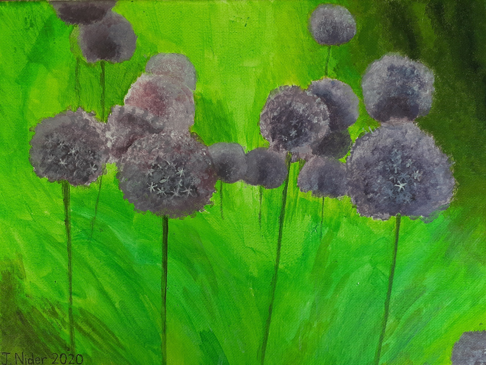

Projects
Most of my projects start when someone tells me that something is impossible to do. Sometimes I do things in an inexpensive way that usually require expensive equipment or setups.- Build an operating system that fits on a single floppy disk (1.44MB)
- Build an accurate metal lathe at home with inaccurate tools
- Statically translate an executable program from one ISA to another
Music
I started writing electronic music in 1992, when I discovered MIDI. I soon discovered MOD trackers (ScreamTracker was my favourite) and later software synthesizers (Rebirth 338). Combined with a simple wave editor (CoolEdit), I made some entertaining tunes! Here are a few of my best ones.
Slave New World (1997)
A cover of Sepultura's "Slave New World" - electronic styleJoel Nider (1998)
Credit to Derek Ohta for the inspiration for this one.Irrational Love (2001)
Virus (2002)
Nothing to do with COVID, although I considered remaking this song last year.Paintings
I started painting in 2012 as a personal challenge. I have been amazed by so many wonderful paintings in museums and art galleries, I always wondered if I could also produce something similar. If nothing else, going through the process of attempting such work gives me a deeper appreciation for those who succeed. Below is a chronological list of my creations so far.000: Child With Father
A copy of a page from my daughter's book "Dora the Explorer".
{kind=link}
001: Raven Quill Calligraphy
A picture of me and my sister when we were younger. My father was teaching me about quill pens, and how people used to write before ball-point pens. We found a raven feather outside, and cut it with a pen knife so it would hold ink.
{kind=link}
002: Pastime
A picture of my sister, building something from a wooden toy.
{kind=link}
003: Dali and his Ocelot
One of my favourite painters, whose work introduced me to surrealism.
{kind=link}
004: Blue Katana
Practicing painting shiny things - the gold and the laquer on the wood.
{kind=link}
007: Karl Capek
The Czech author Karl Capek. He is credited with inventing one of my favourite words - "robot"!
{kind=link}
008: черепаха (Cherepakha)
A sea turtle. I painted this one right after I quit my job before starting my MSc. Now in a private collection in Israel.
{kind=link}
009: 毒蝇伞 (Amanita muscaria)
Some strange looking mushrooms that grow around UBC each year, a week before Halloween. They are as poisonous as they are pretty.
{kind=link}
010: Purple Flowers in the Spring
Some bulbous purple flowers that grow around UBC each year, in May. I have not tested to see if they are poisonous.
{kind=link}
011: Oscar
My father's father, at his TV repair shop.
{kind=link}